|
MÄNNISKOR PÅ MARIABERGET
Ur Stockholmsliv, Staffan Tjerneld, 1950
|
Det finns många romantiska platser i Stockholm, men ingen är väl så mättad av den speciella
Stockholmsromantiken som Mariaberget. Vårhimmelns ljusgröna djup och oändliga vemod, doften
av blommande äppelträn och hägg, mörka bergsbranter över blanka vatten, låga, röda hus - alla
tänkbara ingredienser finns med i denna rundmålning. Många konstnärer, både målande och
skrivande, har medverkat till att få bilden inetsad i stockholmarnas medvetande och det har nog gått
med Mariaberget som många andra liknande platser; det människor ser för sitt inre öga då
Mariaberget kommer på tal är både starkare i färgen och fyllt av mera ursprunglig charm än det den
aktuella verkligheten kan bjuda.
|
|
|
|
|
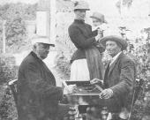
 Borgerlig idyll på Mariaberget. I en av de små täpporna på Bastugatan sitter herrar Kjellander och Stenquist och spelar bräde medan fru Stenquist med dottern på armen tittar på. Borgerlig idyll på Mariaberget. I en av de små täpporna på Bastugatan sitter herrar Kjellander och Stenquist och spelar bräde medan fru Stenquist med dottern på armen tittar på.
|
|
Visst är fortfarande utsikten från Mariaberget betagande och visst
är täpporna på branten lika pittoreska, även om deras antal minskats starkt genom nybyggen i slutet
av 1920-talet, men Eugene Jansson och hans kolleger har gjort sin sak litet för bra. Här skall vi inte
försöka konkurrera med konstnärerna och skildra Mariabergets skönhet och behag, vi skall nöja oss
med att flyktigt teckna dragen av några av alla dem som under tidernas lopp bott däruppe och som
fångats av platsens säregna stämning. Kanske på det sättet också något av det karakteristiska hos
Mariaberget kan komma med.
De större händelserna här ha varit få, ungefär en vartannat århundrade. 1523 drev den resolute
Peder Fredag med sina män bort danskarna från höjden efter ett utfall från Maria Magdalena kyrka
och 1759 härjade den förut nämnda branden, varvid den unge C. C. Gjörwell släpade boksäckar
från sina vänners bibliotek för att rädda de dyrbaraste banden. Sedan hände just ingenting i yttre
avseende förrän 1929 då hela kvartersrader av idyller söder om Bastugatan försvann.
|
|
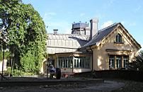
Allan Cederborgs hus, Bastugatan 20. 2004
|
|
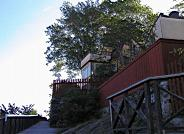
Allan Cederborgs hus.
|
Nej, för det allra mesta har livet gått lugnt och regelbundet på
Mariaberget och innevånarna har ägnat sig åt sitt arbete eller åt behaglig kontemplation i lusthus
med färgade glas och vimpel på taket eller i mastkorgsliknande inrättningar uppe i träden, där gamla
sjökaptener kunde komma en smula i gungning redan innan det första punsch- eller romglaset tömts.
Något av denna stämning finner man i en tavla målad av C. A. Rothsten från Bastugatan 30, där
man ser både ägaren, uppbördskommissarien Isak Sandahl, konstnären själv samt hunden Pan
samlade kring kaffebordet och samtidigt njutande av Riddarfjärdens vattenspeglingar.
|
|
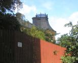
Allan Cederborgs hus.
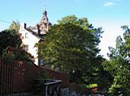
Allan Cederborgs hus.
|
I det Sandahlska huset bodde ända fram till 1900-talet en dam som var en länk mellan äldre
och nyare tider på Mariaberget. Hon hette Frederique Stenquist och hon föddes 1863 i
Bastugatan 30 där hon också dog. Hennes far var vicevärd åt husägaren Sandahl, hon kom in i
posten där hon arbetade tills hon blev pensionerad, då hon slog sig ner vid fönstret i sitt gamla
flickrum, beundrade den väldiga utsikten och målade små porslinsskålar och parfymflaskor som
hon skänkte bort till sina vänner. I en bur satt en uråldrig kanariefågel, på sängen låg huskatten
Putte, i köket tassade trotjänarinnan Anna Zetterström. Tant Frederique älskade blommor och
hon hade själv planterat syrenbuskarna, hasselhäcken och de vita rosorna ute i trädgården, som
förr i världen inte var så lätt att hålla vid liv under torra heta somrar, eftersom vattnet måste
hämtas nere i Brunnsbacken. Man ordnade annars vattningsfrågan genom att sätta stora, i
marken till hälften nergrävda vinfat under stuprännorna.
|
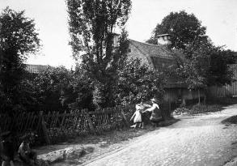
Bastugatan 30. År 1912
|
|
Hela Mariabergets krönika hade tant Frederique i huvudet och hon kunde trolla fram en oändlig rad
minnesbilder. I dem skymtade den gamle kyrkvaktaren, som med silverhår och sammetskalott brukade
sitta under den hundraåriga apeln och dela ut surkart åt kvarterens busfrön, som vanligen roade sig med
att till skräck för sina föräldrar klättra omkring utmed Mariabergets lodräta stup, då de inte lurade
grannarnas grisar att äta franska brön doppade i brännvin eller härmade den ilskna tuppen i övre
Bethlehem, 1700-talshuset på slänten nedanför Lilla Skinnarviksgränd. Där kom de tre nittioåriga
mamsellerna som varje söndag trippade till Maria Magdalena i krinoliner, äkta schalar och bahytter och
så församlingens dödgrävare som bodde i Bastugatan 36 och som för att få fina, flata stenar i sin
trädgård fraktade dit gravstenar
|
från kyrkogården. Något som upptäcktes och väckte stor förtrytelse. Och så fick kyrkvaktarn köra tillbaka stenarna. Tant
Frederique talade också ofta om den myndiga grevinnan Rosalie Stierngranat, född Horn af Åminne.
Det var en ovanlig dam. Hon köpte huset nummer 22 Bastugatan efter den i samma hus 1861
mördade brukspatron Wengelin, vilket bara det var uppseendeväckande. Och då grannarna undrade
om det inte var kusligt i huset svarade hon:
- Jag sover på blodfläcken och det gör mig ingenting. Grevinnan hade två barn, en son, vilken
blev det bekanta Stockholmsoriginalet »Kalle Vänster», samt en flicka som dog ung. Frederique
hade blivit lovat ett litet minne av den döda och en stjärnklar kväll kom grevinnan vandrande till
familjen Stenquist, tog Frederique vid handen, ledde henne fram till fönstret och pekade på en
stjärna:
|
- Den där stjärnan var alltid min lilla Sigrids stjärna. Den får du. I tant Frederiques minne var
en annan granne levande, pastor Bengtsson, mannen som gick över hela stan i prästöverrock och
luggsliten hög hatt och sålde sin bok »Evangelina». »Ska herrn köpa verserna om Kristi
Evangelina av skånska prästen, pastor Bengtsson. Si, jag är pastor Bengtsson, jag är själv
författare, förläggare och försäljare.» Ja, nog minns Frederique hans eviga pratande liksom
»Trasfröken», den yngsta av döttrarna hos skomakaremästare Eklund i huset 28 Bastugatan. Hon
var en stilig ung dam med hatt med plymer och en så kallad barègeklänning, som gav henne
namnet »fröken Barège», vilket många trodde var hennes eget. Det var först då modern en dag
föll i vattnet och drunknade vid Ragvaldsbro som hon blev »litet underlig», som det heter, och
förföll.
|
|
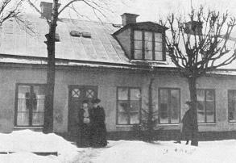
Tant Frederique Stenquist är damen längst till vänster medan de övriga är Thyra och Sigrid Stenquist, alla kända Mariabergsbor.
|
|
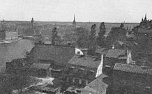
Det riktiga Mariaberget med täppor och stugor från väster. Den Sandahlska gården närmast.
|
|
Huset nummer 30 Bastugatan, där tant Frederique bodde, drog i början av 1900-talet
uppmärksamheten till sig och förekom ganska ofta i tidningarna. Skälet var en av hyresgästerna,
baptistpredikanten John Hedberg, som hade kommit till Stockholm från Göteborg 1879, och som bland
annat verksamt bidrog till tillkomsten av Ebeneserkapellet i hörnet av Blecktornsgränd och
Besvärsgatan. Tillsammans med fröken Ida de Flon började han en stor hjälpsamhet bland Söders
fattiga och då »brännvinskungen» L. O. Smith skänkte 30 000 kronor att användas till fromma för
»drinkares barn» fick Hedberg förtroendet att fördela pengarna. 1905 lämnade han församlingen för att helt ägna sig åt välgörenhet och lyckades genom sin oerhörda energi skapa en helt privat
fattigvårdscentral
|
med expedition på Bastugatan och med ett upptagningshem för mindre barn som kallades »Svalboet». Hedbergs strävan gick ut på att skaffa de fattiga stadsbarnen adoptivföräldrar på
landet och mellan 1903 och 1916 ordnade han med inte mindre än tretusen fosterhem.
En intressant tidsskildring från denna Stockholms första socialbyrå ger Stockholms Dagblad i
ett reportage 1909:
»Pastor Hedberg sitter i sitt lilla blåtapetserade mottagningsrum likt en fältherre i sitt tält under
brinnande batalj. En adjutant bevakar ingången och släpper in de hjälpsökande en och en i sänder. En
annan sitter vid ett bord och skriver upp deras namn, under det en tredje och en fjärde stå till hakan i
säckar och lådor, sysselsatta med att fylla den ena glupande kassen efter den andra med födoämnen.
Ensamt under förra året utdelades icke mindre än 2 611 matransoner och kläder till 1 585 personer.
Och underhållet till denna ofantliga verksamhet som hålles i gång av en enda person, inflyter
i frivilliga bidrag från alla håll. Genom den lilla dörren ut till förstugan går en jämn ström av
karlar med potatissäckar och brödlårar, damer som lämna avgifter eller bidrag, brevbärare och
stadsbud med lådor och paket, som, sedan de öppnats, visa sig innehålla allt möjligt, från
kaffegrädde till galoscher. Det ligger kamp i luften, det är som rustade man sig till en belägring,„
och så är ju också förhållandet, ty nöden belägrar dörren. Men, nöden är tyst; fastän en stor
skara män och kvinnor stå pustande ute i väntrummets tjocka luft höres nästan icke ett ljud
därifrån.»
Hedberg blev uppmuntrad av Oscar II i sin verksamhet, men myndigheterna ställde sig
skeptiska och fordrade kontroll. Men då svarade »Fattigprästen på Söder» som hans hedersnamn
blev: »Jag hjälper med hjärtat, myndigheterna hjälper med lagar och paragrafer.»
|
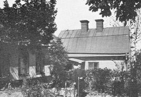
Ture Rangström flyttade 1908 till Bastugatan 30, i vars trädgård han här syns.
|
|
Till Sandahlska gården kom en dag 1905 en ung man som inte bara såg mycket bra ut utan
dessutom var skrudad i bonjour och sombrero, en klädsel som stack av mot den gängse på
Mariaberget. Han försvann utomlands under tre år, men återvände och slog sig ner i huset, varifrån man snart dagligen hörde sång och musik. Mannen var nämligen tonsättare och hette Ture
Rangström. Att få upp flygeln i våningen var inte det lättaste, till slut blev det ingen annan råd än
att slå hål på väggar och golv, vilket säkert inte gjorde de kalla rummen varmare. Under de första
åren av Rangströms tid vid Bastugatan var det inte ovanligt att hans elever på vintern stod och
sjöng underbara arior klädda i halmtofflor.
|
|
Det var för övrigt många elever som sökte sig dit upp för att lära sig sjunga, vilket delvis berodde på
läraren Rangströms stora personliga charm. 1914 vandrade en rad av Operans artister uppför
backarna och säkert ett sextiotal elever gick varje vecka in och ut i nummer 30, bland andra Conny
Molin, Kalle Kinch, Lisa Tirén och Karin Rydgvist-Alfheim. Det var också många vänner som kom och
slog sig ner på verandan med den makalösa utsikten, goda namn från konsertprogram och
teateraffischer, Oskar Lindberg, Carl Nielsen, Kurt Atterberg, John Forsell, Armas Järnefelt, Natanael
Berg för att nu nämna några av dem. Särskilt stor var tillslutningen vid födelsedagsfesterna som
började åtta på kvällen och slutade fem på morgonen. Ture Rangström och hans maka, Lisa
Hollender, tyckte om att se huset fullt av vänner och bekanta.
|
|
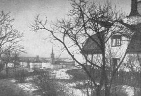
Bastugatan26
|
En stor del av Ture Rangströms mest kända kompositioner kom till på Mariaberget alltifrån
»Dityramb», som skrevs 1909 och som har två rader ur Strindbergs »Sångare» som motto. Överhuvud
kom Strindberg att betyda mycket för Rangström, symfonien »August Strindberg in memoriam» från
1910, operan »Kronbruden», »Mälarlegender», »Advent» och visan »Villemo, Villemo, hvi gick du» är ju
alla Strindbergsinspirerade. Då Rangströms dotter föddes fick hon också heta Villemo.
Men det fanns också andra inspirationskällor, utsikten över Riddarf järden och Ragnar Östbergs
stadshus som Rangström såg resa sig på Kungsholmsstranden. Det var därför i sin ordning att det var
Rangström som fick komponera musiken till invigningen, dels festpreludiet »Vår stad» och musiken till
Sigfrid Siwertz' festspel »Taklagsölet».
Fyra trappor upp i huset Bastugatan 40 bodde från 1892 till sin död 1915 konstnären Eugene Jansson,
vars måleri under denna tid var en enda hyllning till Mariaberget och staden på andra sidan vattnet.
Liksom Rangström var han en Mariabergsbo som skilde sig från de övriga, redan hans cylinder och den
röda rosen i knapphålet var uppseendeväckande i miljön. Och i ateljévåningen var det mycket som han företog sig
som föll utanför ramen för det borgerliga livet på berget, antingen han spelade Chopin på pianot
eller gjorde voltige för att mjuka upp musklerna, hängande i ett par ringar i taket. Eller han
bryggde det kaffe som var berömt i bekantskapskretsen. Hans måleri, de kända nattmotiven i
blått med lyktornas diffusa ljusrader runt Riddarfjärden, skilde sig ju också från andra
konstnärers.
Eugene Jansson var romantiker och målande poet, Klas Fåhraeus säger i en essay: »I gränderna på
Söder fann hans känsla all den poetiska näring den behövde. I Riddarfjärdens vatten speglade sig
hans drömmar.» För senare generationer kanske en del av detta måleri är alltför romantiskt, men
man kan ändå inte låta bli att fängslas av det starka greppet på ämnet i »Midnattsstämning vid
midsommartid» med skonarens mörka silhuett. För övrigt var det inte bara utsikten från berget som
fångade Eugene Jansson, han ställde gärna upp sitt staffli för andra motiv; 1899 målade han till
exempel »Besvärsbacken» om vilken Nils G. Wohlin skriver: »Hur många av de trötta vandrare, som strävat uppför
Besvärsbacken, ha kunnat se någon skönhet i de enkla 1800-talsfasader som vetta mot gatan med dess
fattiga kullerstenar. Men konstnären med sin rikare syn har av detta alldagliga motiv lyckats framskapa
något av sublim helgd. Och dock är intet påtagligt nytt tillfört motivet. Intet av skönmålning eller
»förgyllning». Samma år målade Eugene Jansson också »Trapporna vid Timmermansgatan» och i
augusti »Mångård» med Bastugatans husgavlar och mäktiga popplar. En kanske ännu starkare
stämning av längtan bort från samtiden och vardagen finner man i självporträttet »Jag» målat 1901.
Men Eugene Jansson var ingalunda den enda konstnären i Mariamiljön. 1897 flyttade Georg och Hanna
Pauli in i Bellmansgatan 6 och där gjorde han förarbetena till sin »Majstången bindes» i Södra latin,
medan hon målade sin berömda »Vännerna», där Ellen Key sitter och läser högt ur - som Carl G. Laurin
påstår - »någon snäll anarkists skrifter». Tornrummet i nummer 8 Bellmansgatan byggdes som ateljé åt Gottfrid Kallstenius och längre ner på samma gata bodde Waldemar Nyström
och Nils Kreuger.
Ja, till slut blev konstnärsinvasionen så stor att det kom upp ett förslag om att ordna med ett
eget konstnärernas hus. Georg Pauli hade en släkting som hade del i ett hus vid Bastugatan
och då tyckte de optimistiska konstnärerna, att tomtfrågan redan var ordnad och det
planerade konstnärshuset döptes raskt till »Pauliseum». Ett möte ordnades för att diskutera
projektet, men där upptäckte man tyvärr att Ingen av initiativtagarna hade några pengar. En
av dem ansåg emellertid att detta betydde mindre, det var bara att gå upp till några
»matadorer», bland andra excellensen Printzsköld, och be om anslag. Hur det nu kom sig var
ingen pigg på att besöka Printzsköld och så förföll planerna på ett »konstnärernas hus». För
vilken gång i ordningen är inte lätt att säga.
|
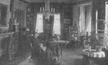
Hemma hos källarmästare August Hallner och hans fru Tekla i Bellmansgatan 1. År 1910.
|
|
En fast punkt i tillvaron fanns det emellertid för de målande och skrivande herrarna och det
var restaurang du Sud i Mariahissen. Den öppnades 1886 och leddes i tjugotvå år av
källarmästare August Hallner, som hade vissa artistiska talanger - han hade gått på Akademien
- vid sidan om de som hörde ihop med yrket. Han var en utmärkt trevlig värd och redan från
början blev restaurangen mycket populär, trots att själva hissen, som förut påpekats, inte blev
någon succé. Lokalerna pryddes av målningar av dekorationsmålaren Grabow och invigningen
skedde samma augustidag som den portugisiske monarken gjorde sin färd från Drottningsholm
till Riddarholmen, varvid det stora fyrverkeriet tog sig särskilt bra ut från du Sud.
|
Hallner hade för övrigt utmärkta förbindelser med kungahuset. Kung Oscar kom en dag på
besök och tittade på utsikten och strax efter lade en förmiddag jakten »Sköldmön» till vid Söder
Mälarstrand med drottning Sofia ombord. Även hon besökte restaurangen och det sägs att det
var enda gången drottningen satte sin fot på en Stockholmsrestaurang.
|
du Sud blev som sagt samlingspunkt för olika konstnärskotterier. Bland andra sågs där Arvid
Ahnfelt, Edvard Fredrin, Johan Nordling, Emil Svensen, August Strindberg, Vicke Andrén och
militärförfattaren och historieskrivaren Otto Sjögren som höll samman kretsen, vilken därför kallades
»Ottomanska sällskapet». Herrarna träffades en gång i veckan i det så kallade Gröna rummet, då dagens politiska och litterära
frågor diskuterades. Och naturligtvis var även Mälardrottningens skald, Daniel Fallström där. Han
tittade inte bara på utsikten utan även på servitrisen »Vackra Hedvig» om vilken han en gång
diktade:
»Två ögon jag ser
som titta fram bakom sammetgardiner,
och jag menar, de ögonen äro förmer
än källarmästarns alla viner.»
|
|
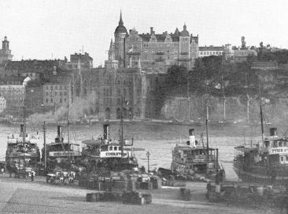
"En borg från stormaktstiden", konstaterade en fransk resehandbok en gång om huset på krönet av Mariaberget. Man förstår misstaget, huset är ännu i denna dag mycket pampigt. Då den här bilden togs 1896, var det emellertid bara fem år gammalt.
|
|
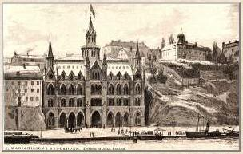
Axel Ekblom, teckning
|
|
I översta tornrummet på du Sud höll sällskapet »Stjärngossarna» till, fem herrar som ägnade sig åt
amatörastrologi, 90-talet var ju sällskapens och kotteriernas gyllene tid. Till stjärnkretsen hörde utom
Hallner själv målaren Herman Feychting, Vicke Andrén och John Johnson; de tre sistnämnda kallades
»Klöverbladet» och bodde högst originellt i ett litet hus Åsögatan 145, bland konstnärer känd som
»Chateau du Sudd». Konstnären Robert Lundberg, som bodde på Badstugatan och var gift med
skådespelerskan Lotten Seelig, var också stjärnintresserad.
|
Men det stannade inte med alla dessa. Till du Sud kom allt emellanåt Viktor Rydberg för att
ensam äta sin favoriträtt höns med ris, men ensamma var nog aldrig Anders Zorn eller Albert
Engström som också hörde till gästerna. Vid avskedsfesten för norske ministern Otto Blehr sågs för
övrigt Verner von Heidenstam, Ellen Key, Carl Larsson och naturligtvis Carl G. Laurin, som var
källarmästare Hallners närmaste granne.
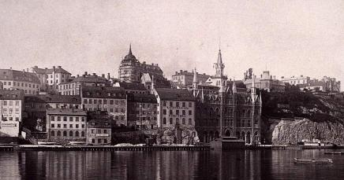
1888
|
|
Den väldiga tegelborgen på branten av Mariaberget hade byggts 1891 och där flyttade två år
senare den nygifte Carl G. Laurin in med sin maka född Petre. Laurin skriver i sina memoarer:
»Våningen bestod av fem rum och kök. Utsikten var kanske den vackraste i Stockholm. Nedanför
låg Riddarfjärden, och man såg hela Stockholm utom Söder från salong, sängkammare och matsal
och ännu mera från balkongen. I en då nyutkommen bok av fransmannen Paul Ginisty hittade jag en
bild av den stolta riddarborgen med torn där jag skulle bo. Huset kallades där 'un coin du vieux
Stockholm (en vrå av det gamla Stockholm). Det var emellertid två år gammalt och fuktade något.»
|
Carl G. Laurin bodde till sin död 1940 i huset och våningen disponeras nu av hans son kapten
Gösta Laurin. Det Laurinska hemmet blev en samlingspunkt inte bara för en oöverskådlig skara
vänner och bekanta, Carl G. Laurin hade ograverad ärvt den borgerliga samhörighetskänslan från
den tid Stockholm var en småstad, utan också för stadens hela kulturliv. För att inte tala om de
många kullar av unga damer från Anna Sandströms seminarium, som fördjupade sig i
konsthistorien, vilken Laurin på ett enastående sätt gjorde tillgänglig för »vanligt folk». Han bröt
mycket av den exklusivitet som denna vetenskapsgren länge lidit under.
|
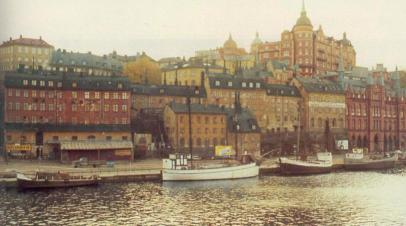
|
|
Strax väster om den Laurinska tegelborgen ligger fortfarande en liten låg byggnad med
trädgårdstäppa som byggdes omkring 1880 av en på den tiden mycket känd stockholmare,
redaktör Richard Gustafsson.
Han var verkligen infödd i staden, Richard Gustafsson. Han växte upp på Ladugårdslandet och kom
tidigt i lära hos Boivie på Drottninggatan, där han formade strutar och skrev en och annan vers på påsarna. Teatern
lockade emellertid och efter ett elevår på Kungliga Teatern reste han några år med Åhmans och
Roos' sällskap till vilket han skrev sitt första teaterstycke, »På Finlands gamla strand». Så blev
han |
rättegångsreferent i Dagens Nyheter och kom till världsutställningen 1866 som Aftonbladets
representant. Efter en del utlandsresor återvände han hem och började ge ut sina sagor, som
blev utomordentligt populära inte bara i Sverige, de översattes nämligen även till engelska, tyska
och franska och den franska upplagan hedrades till och med att bli antagen som läsebok i
franska folkskolor. 1869 startade Gustafsson skämttidningen »Kasper», där han var både
redaktör, ekonomidirektör, krönikör, versskrivare och expeditör. De två gardister som drog
pressen var hans enda egentliga hjälp. Tidningen slog an och efter ett tiotal år kunde Gustafsson
bygga eget hus uppe på Mariaberget, på samma tomt där teaterdirektör Setterholm byggt sig en
stuga för de pengar han tjänat på »Andersson, Pettersson och Lundström».
Även Kaspers redaktion flyttades till Bastugatan där man ofta såg tidningens duktige unge
tecknare Carl Larsson. Begynnelsearvodet var två kronor teckningen vid leverans av fem i veckan,
men sedan steg honoraret och under Parisåren var Gustafsson Larssons första verkliga mecenat.
Det var inte litet Richard Gustafsson hann med under sitt sjuttioåttaåriga liv. Utom sagorna
skrev han revyer och ett hundratal teaterpjäser, gav ut de första tjugofemöresböckerna och
tillhörde vid två tillfällen andra kammaren. Som stadsfullmäktige motionerade han fram vår
första isbrytare och Kungsgatans genombrytning av Brunkebergsåsen. Han var Stockholms
Gillets stiftare, tog initiativ till återupplivandet av julmarknaderna på Stortorget och till August
Blanches monument på Karlavägen. Vilket allt inte hindrade honom från att varje sommar segla
med sin »Kryss» och att redigera sin Kasper.
Den unge Söndags-Nisse-redaktören Hasse Z. frågade en gång Gustafsson:
- Tycker du att Kasper är en kvick tidning?
- Kasper har varit en kvick tidning, nu går den, svarade Gustafsson.
|
Som förut nämnts raserades i slutet av 1920-talet hela längan av idylliska hus söder om
Bastugatan, men Mariabergsfolket höll sig tappert kvar på den norra delen i de av trädgårdar
omgivna små husen. I kvarteret där Richard Gustafsson bott rådde ännu något av den stockholmska
malmgårdsstämningen, i nästa kvarter efter Bastugatan fann man en oregelbunden men intressant
bebyggelse från mitten av 1800-talet, medan kring Lilla Skinnarviksgränd en rad typiska
Söderstugor grupperade sig. På sommaren 1935 kunde emellertid tidningarna meddela, att
myndigheterna hade planerna klara för en nybebyggelse även av denna del av Mariaberget, någon
sorts »Lärkstad» med lamellhus och park. Kort därefter jämnades ett 1700-talshus i nummer 26
Bastugatan med marken.
|
|
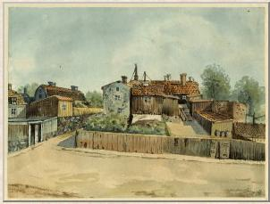
Trähus vid Lilla Skinnarviksgränd. Till vänster nr2 / Bastugatan 32. Till höger nr 1 / Bastugatan 34. Henrik Reuterdahl, akvarell 1889.
|
Men då började oppositionen. Hos Anna Lindhagen på Fjällgatan samlades en rad kända
personer som i sin tur beslöt att få med sig andra för att skapa en opposition mot rivningen. Och
det var lätt att få, Isaac Grünewald som var född i trakten, i Hornsgatan 64, blev full av
entusiasm för en aktion mot myndigheterna liksom konstnären Gunnar Hallström, som på hösten
höll ett brandtal i Konstnärsklubben. Det blev en häftig tidningsdebatt och tidningarna visade sig
vara på »esteternas» sida, sammanslutningen Mariaföreningen bildades och då kampen så
småningom började mattas, verkade det som för en gångs skull de estetiska synpunkterna skulle ha
avgått med seger. I varje fall har på de femton år som förflutit sedan dess inga ytterligare rivningar
förekommit.
|
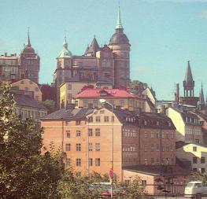
|
|
En ny målargeneration har nu tagit Stockholms Montmartre i besittning. Einar Jolin har
visserligen flyttat, men Gösta Adrian-Nilsson fångar ibland trots sin abstrakta inriktning någon
detalj ur omgivningen. I gamla »22-an» har Ulf Peder Olrog komponerat en del av sina riksbekanta
visor och i tant Frederiques gamla lägenhet bor målarparet Gösta Wiberg. Och för inte länge sedan
fullbordade Hilding Linnqvist en stor bonad som blivit en enda kärleksförklaring till Mariaberget;
där finns den vita äppelblommen, fjärdens vatten, stadens tak, Stadshusets röda tegel, de älskande
paren och den unge stafflimålaren.
Mariabergets kvarter har en fasad mot Riddarfjärden, men också en söderut, mot Hornsgatan.
Som ett reservat ligger där mellan Ragvaldsgatan och Blecktornsgränd den gamla gatupuckeln med sin
bebyggelse, men det är ett mycket kortsiktigt reservat. Det finns nämligen planer på att ersätta hela
|
längan
med modern höghusbebyggelse och det behövs sannolikt endast en lättnad på byggnadsmarknaden för
att planerna skall sättas i verket. Ännu kan man emellertid bese denna rest av den äldre Hornsgatan,
man kan titta på de smårutiga fönstren och originalkakelugnarna i nummer 38, på den gamla huggstensportalen i nummer 32, höjdkrönets hus, samt på nummer 30, där vid sekelskiftet i dekorativ skrift den över hela Stockholm kände möbelsnickaren C. E. Jonssons namn och »Möblerings Etablissement»
lyste. I nummer 20 åter hittar man en fin gammal Söderaffär, en juvelerarbutik som har hundraåriga
anor. Här etablerade 1823 Anders Petter Lundquist en liten anspråkslös guldsmedsbod med verkstad
innanför. Under tidernas lopp har fastigheten undergått många yttre förändringar, men interiören är
fortfarande densamma, liksom ingången. I sin verkstad tillverkade Lundquist allt som såldes i butiken,
ty ännu under 1800-talet var guldsmederna verkliga yrkesmän och inte som nu ofta försäljare av
nysilverfabrikat.
Guldsmedjan fick ganska snart stort anseende och Lundquist räknades till Stockholms förnämsta
guldsmeder. Det förnäma Stockholm gjorde sig omaket att låta sina ekipager dras uppför Söders branta
backar och det var inte alls ovanligt, att hovets vagnar stannade utanför den för vår tid oansenliga
affären. 1857 dog Lundquist och efterträddes av C. A. Björklund och efter dennes död har affären
bevarats i familjens ägo och nu står fru Elsa Rundgren - också släkt - för rusthållet.
I hundratjugosju år har firman hållit till i samma lokaler men måste inom kort flytta till nummer
24 vid samma gata, då huset skall rivas.
|
I hörnet av Hornsgatan och Timmermansgatan med adressen 66 Hornsgatan, där nu ett hyreshus
från 1906 reser sig, låg tidigare ett par gårdar som spelade en framträdande roll i hela stadens liv. De
hyste nämligen Söders Gästgivargård och skjutsstation, varifrån på 1850-talet upp till ett sextiotal
hästar om dagen gick ut i skjuts. Inkörsporten var av trä och ledde till en stor öppen gård, där trillor
likaväl som finare resvagnar stod uppställda. I ett mindre hus till vänster om porten fanns en trappa upp
en vacker sal, den så kallade stora salen, som hade målade dörröverstycken och blå och gula kakelugnar. Inredningen lär senare ha förts till en gård i Kristianstadstrakten, Bäckamo.
|
|
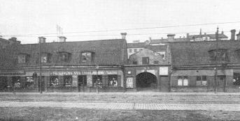
Söders gästgivargård låg i Hornsgatan 66 och strax intill fann man denna ganska ståtliga gård, som antagligen också spelat en roll i den omfattande skjutstjänsten, innan järnvägen öppnades.
|
|
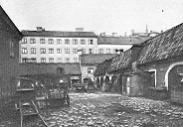
|
|
Den som skulle nedåt landet och inte kunde använda sig av ångbåt hade före järnvägens
öppnande bara skjuts att välja och även om man höll sig med egen vagn, vilket ansågs klokast,
måste man för en resa anlita de hästar, som fanns på gästgivargårdarna. En del av dessa hästar
skulle enligt reglementet stå i sin spilta och vänta på resenärer, men de blev snart upptagna, och
då måste man anlita reservhästarna, som skulle hämtas från arbetet ute på åkrarna eller i
skogarna. Ett dröjsmål i sådana fall på mellan en och fyra timmar uppges i resehandböckerna
från 1840-talet som ganska normalt. De resande får därför det rådet att kosta på sig
förutbeställning av hästar genom budskickning.
|
Så fanns förstås diligensen, men som påpekats kom den aldrig att spela någon större roll i Sverige.
Vagnarna var små och turerna glesa och först på 1850-talet tog sig postverket på allvar an driften. Restiden var också efter moderna begrepp mycket lång, 1838 drog till exempel en diligensresa från
Stockholm till Göteborg omkring fyra dagar. Man övernattade i Västerås, Vretstorp strax söder om
Örebro samt i Lidköping. Ett försök med samtrafik, varvid den första dagsresan gick från Stockholm till
Arboga med ångbåt och med endast en övernattning i Lidköping tycks inte ha slagit väl ut, trafiken inställdes nämligen efter en säsong. Under 40- och 50-talen lyckades man inte i högre grad förkorta
diligensresorna och det är begripligt att järnvägen, som avverkade sträckan Stockholm-Malmö på omkring ett dygn, kom att revolutionera hela reselivet.
|
|
{kind=link}
{kind=link}
{kind=link}
{kind=link}
{kind=link}
{kind=link}
{kind=link}
{kind=link}
{kind=link}
{kind=link}